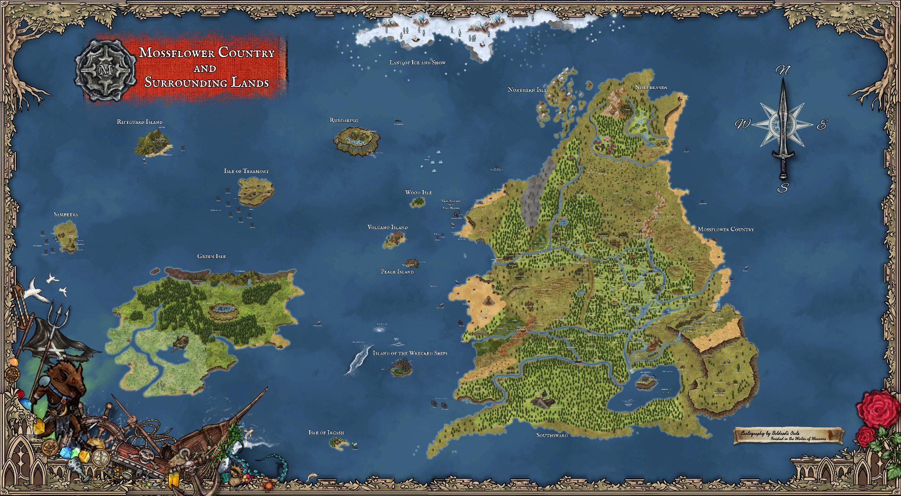
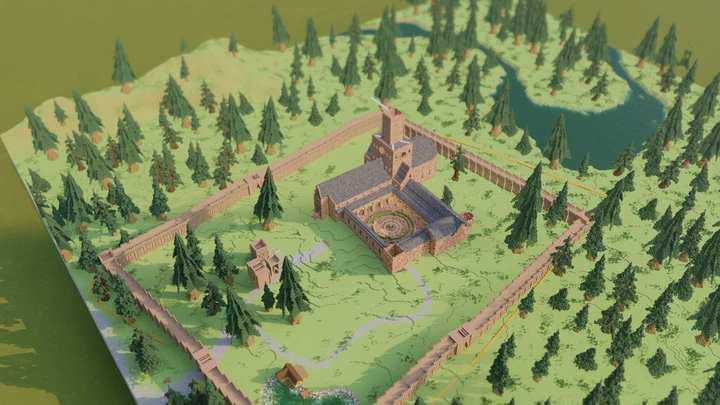
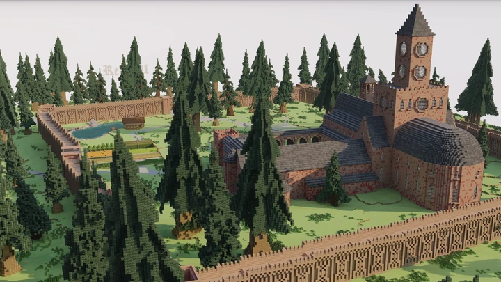
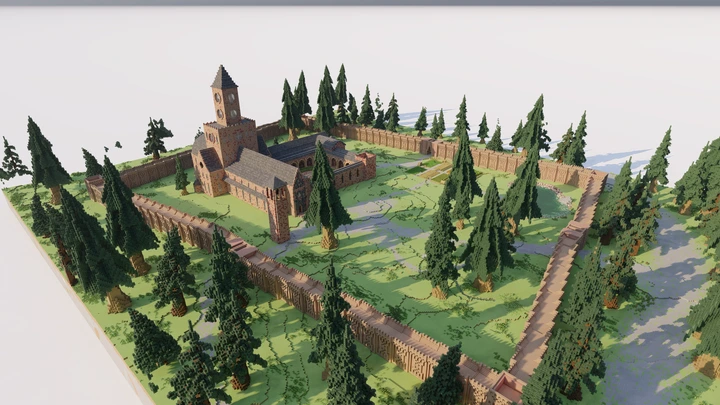

Built with history
Woodland Realms grew from years of large-scale Minecraft worldbuilding into a dedicated RPG server concept focused on exploration, atmosphere, community and long-form progression.
Entering the realm

An original medieval woodland-fantasy Minecraft RPG
Explore a handcrafted world of ancient forests, fortified settlements, hidden ruins and dangerous roads powered by deep RPG progression, more than 1,400 quest concepts, professions, community towns, custom creatures, items, recipes, textures and stories shaped by the players who call the realm home.
Welcome, traveler
Woodland Realms grew from years of large-scale Minecraft worldbuilding into a dedicated RPG server concept focused on exploration, atmosphere, community and long-form progression.
Players can develop an identity through professions, towns, adventures, custom progression and social systems rather than following one fixed path.
The website and game world are designed to grow together with new regions, chronicles, events, creatures, items and player stories.
Explore Woodland Realms
The site follows the original fifteen-part Woodland Realms plan: world, lore, gameplay, community, development, and the systems players need before and after joining.
History, philosophy, and scale.
🗺Interactive regions and discoveries.
📜Factions, peoples, history, legends, and discoveries.
⚔Classes, skills, jobs, towns, economy, and progression.
✦Story, exploration, profession, hidden, legendary, and seasonal.
☠Creatures, encounters, and danger ratings.
❖Weapons, foods, recipes, materials, cosmetics, and collectibles.
🧭Preview your class, profession, homeland, and path.
📘Installation, rules, connection, commands, and help.
💬Discord, announcements, events, screenshots, videos, and spotlights.
🏗Live-style world progress and regional roadmap.
🕯Changelogs, updates, and development records.
◇Listings, voting, Discord, PMC, and future support.
🛡Server staff, builders, developers, and credits.





Development path
Fantasy identity, loader, transitions, responsive foundation and Realm Gate.
Dedicated World, Gameplay, Lore, Quests, Classes, Items, Bestiary, Guide and Community pages.
Structured content data, detailed regions, filters and richer gallery systems.
Supabase accounts, profiles, admin tools, applications and live content.